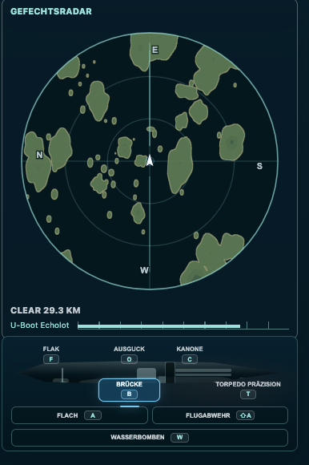
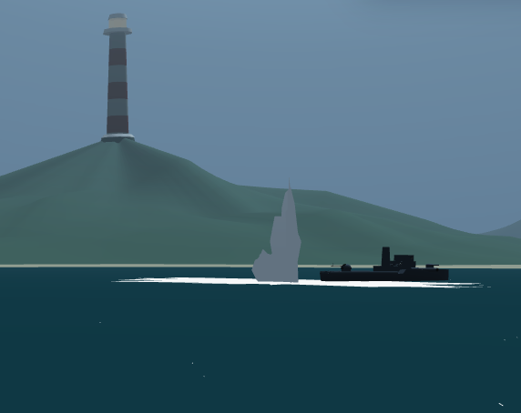
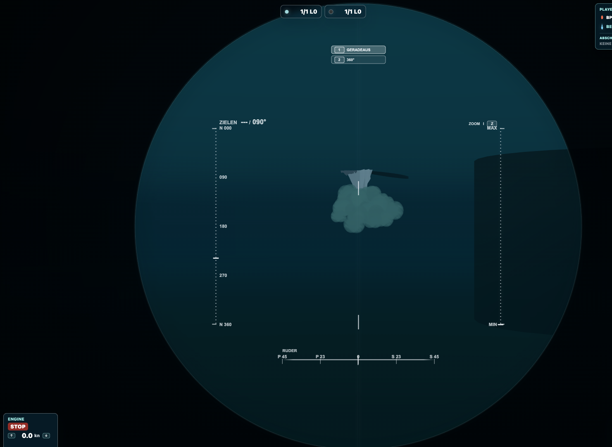
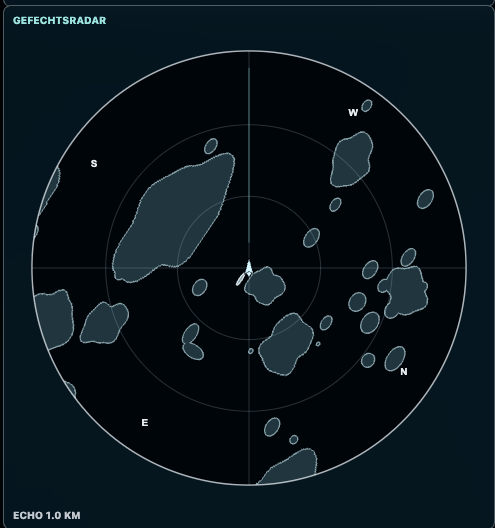

Torpedoboote: oben gefährlich, unten nicht harmlos
Ein Torpedoboot kann dich aufgetaucht mit Torpedos und Geschützen angreifen. Auf Sehrohrtiefe ist dein Rumpf nicht sichtbar; das Sehrohr bleibt aber ein empfindlicher Hinweis und ein verwundbares Ziel. Auch Flak und Kanone können dich durch Treffer am Sehrohr versenken. Außerdem dringen ihre Geschosse ins Wasser ein: Treffer unmittelbar unterhalb deines Sehrohrs können die darunterliegenden Aufbauten erreichen und dich ebenfalls versenken. Die schnelle Schussfolge der Flak ist besonders gefährlich; die Vergrößerung der Kanone hilft dem Gegner, dein kleines Sehrohr zu finden. Ein verborgener Rumpf schützt dich auf Sehrohrtiefe deshalb nicht vor Geschützfeuer.
Bei 1/3 Fahrt oder weniger ist dein Sehrohr samt Wasserwirkung wesentlich unauffälliger. Schnell zu fahren erleichtert dem Gegner die Suche. Wird deine Position erkannt, kann ein Torpedoboot sie überlaufen und Wasserbomben einsetzen.
Wasserbomben (Gefahr für dein U-Boot)
Wasserbomben kommen von Torpedobooten. Sie werden hinter und seitlich vom Boot abgegeben und explodieren nach einer Verzögerung. Ihr Wirkungsbereich gefährdet U-Boote – auch tief getauchte. Ein reiner Tiefenwechsel ist keine sichere Rettung.
Achte auf den Kurs des Verfolgers. Wenn er über deine Position läuft, bleib dort nicht stehen: Verändere Kurs und Position frühzeitig, sofern die Landschaft es zulässt. Warte nicht erst auf den lauten Knall. Wiederholt denselben Ort zu besetzen macht dem Angreifer die nächste Serie leicht.
Das Torpedoboot besitzt ein U-Boot-Echolot für die unmittelbare Nähe. Verlass dich also nicht allein darauf, dass dein Sehrohr verschwunden ist. Abstand und eine neue Position können wichtiger sein als noch ein wenig mehr Tiefe.




Wasserbomben aus Sicht des getauchten U-Boots


Wasserbombe · Detail aus derselben Aufnahme
Unterwasseranzeige · ein Schiff kommt dir sehr nahe


Der helle Schiffskontakt liegt unmittelbar neben deiner eigenen Markierung in der Mitte. So erkennst du unter Wasser, dass ein Schiff dicht bei dir ist oder über deine Position läuft. Ist es ein Torpedoboot, drohen Wasserbomben: Ändere frühzeitig Kurs und Position. Die einfarbige Anzeige unterscheidet Freund und Feind nicht und zeigt keinen genauen Höhenabstand.
Andere U-Boote: die Gefahr auf deiner Höhe
Aufgetauchte U-Boote erkennst du am ganzen Boot. Auf Sehrohrtiefe verraten sie sich nur klein über dem Wasser; tief getaucht suchst du sie in der Unterwasseranzeige. Sie können dich dort mit Torpedos bekämpfen, wenn Schussrichtung und Tiefe passen. Prüfe deshalb auch beim eigenen Angriff, ob ein fremder Torpedo auf dich zuläuft.
Rammen: dein Boot ist verletzlich
Dein Sehrohr ist besonders empfindlich: Kollidiert es mit einem Schiff an der Oberfläche, kann dein U-Boot sinken, während der andere den Kontakt übersteht. Das gilt auch, wenn ein aufgetauchtes U-Boot dein Sehrohr trifft – oder du mit dem Sehrohr unter einen fremden Rumpf fährst. Suche also nicht die Kollision, nur weil der Gegner dich scheinbar noch nicht gesehen hat.
Auch aufgetaucht ist eine kräftige Kollision mit einem Torpedoboot für dein U-Boot gefährlich. Treffen zwei U-Boote mit genügend Wucht aufeinander, können beide sinken; das gilt auch tief unter Wasser bei ähnlicher tatsächlicher Tiefe. Halte Abstand zu Freund und Feind. Rammen ist keine sichere Alternative zum Torpedoangriff.
Flugzeuge: hören hilft nur oben
Flugzeuge suchen und greifen mit Torpedos und Bomben an. Aufgetaucht bist du für sie ein sichtbares Ziel; mit der Flak kannst du dich wehren. Beim Tauchen verlieren sie deinen sichtbaren Rumpf aus der Aufklärung. Das macht bereits unterwegs befindliche Waffen aber nicht ungefährlich.
Unter Wasser werden Flugzeuge akustisch ausgeblendet und fehlen in der Unterwasseranzeige. Bevor du auftauchst, wähle nach Möglichkeit eine neue Position und kontrolliere die Oberflächenlage, sobald deine wirkliche Tiefe es zulässt.